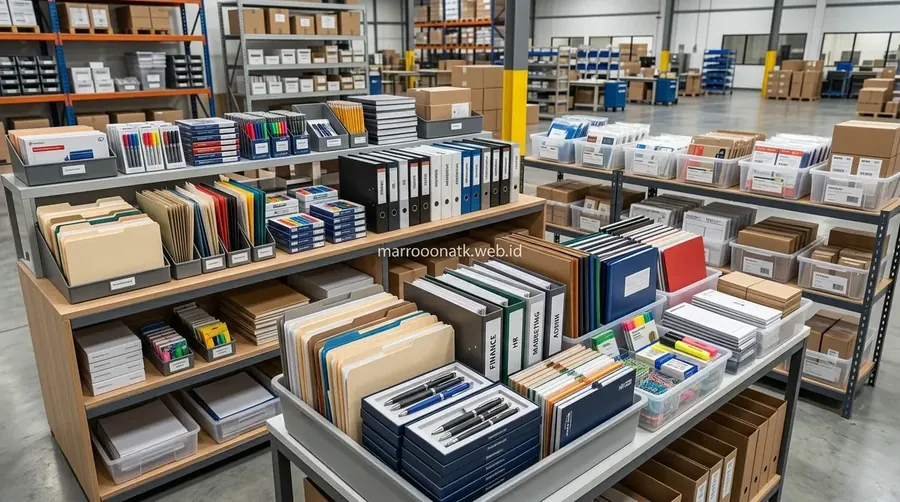

Tantangan Tata Kelola Pengadaan ATK pada Skala Korporasi & Multinasional
Layanan paket pengadaan alat tulis kantor eksklusif korporat dari MAROON ATK dirancang khusus untuk memenuhi kebutuhan divisi Purchasing dan General Affairs melalui konsolidasi pasokan rutin terencana, jaminan ketersediaan stok anti-putus, dokumen penawaran harga (SPH) resmi, faktur pajak e-Faktur PPN 11%, serta sistem pembayaran monthly billing consolidation yang rapi dan akuntabel.
Bagi perusahaan berskala menengah, korporasi besar, dan perusahaan multinasional yang menaungi ratusan hingga ribuan karyawan, pengelolaan alat tulis kantor (ATK) bukanlah perkara sederhana. Pengadaan yang dilakukan secara parsial (ad-hoc buying) oleh masing-masing divisi atau cabang sering kali memicu berbagai inefisiensi:
- Beban Administrasi Berlebih: Tim Accounting harus memproses puluhan lembar kuitansi dan faktur retail yang tercecer setiap bulannya.
- Ketiadaan Kontrol Anggaran (OpEx): Pembelian eceran di toko retail menyulitkan tim Purchasing dalam melacak pola konsumsi riil dan mengendalikan kebocoran anggaran.
- Risiko Putus Pasokan: Ketika kebutuhan mendesak muncul seperti persiapan rapat pemegang saham atau audit tahunan, stok kertas atau toner mendadak kosong karena tidak ada komitmen alokasi stok dari supplier.
- Masalah Faktur Pajak: Pembelian eceran sering kali tidak disertai e-Faktur PPN 11% yang valid, berisiko terhadap kepatuhan perpajakan perusahaan.
Mengatasi problematika tersebut, beralih ke skema paket pengadaan alat tulis kantor terstruktur bersama supplier B2B profesional menjadi langkah strategis untuk memangkas waktu kerja administrasi hingga puluhan jam per bulan.

Keuntungan Memilih Paket Pengadaan Alat Tulis Kantor B2B
Simulasi efisiensi biaya dan kemudahan operasional procurement dengan sistem paket langganan rutin.
Pilar Layanan Paket Pengadaan ATK Eksklusif MAROON ATK
MAROON ATK memformulasikan sistem kemitraan B2B yang selaras dengan Standard Operating Procedure (SOP) tata kelola pengadaan korporat modern melalui katalog alat tulis kantor terlengkap:
1. Sistem Penagihan Terpadu (Monthly Invoicing Consolidation)
Perusahaan Anda tidak perlu lagi melakukan pembayaran setiap kali kurir mengantar barang. Melalui skema kontrak kerjasama korporat, seluruh pesanan rutin bulanan dicatat dalam Surat Jalan resmi. Pada akhir periode cut-off penagihan, tim kami menerbitkan satu bundel invoice komprehensif yang dilengkapi rekonsiliasi PO dan faktur pajak e-Faktur PPN 11%.
2. Alokasi Buffer Stock Terjamin di Fasilitas Gudang
Untuk item-item kebutuhan vital bervolume tinggi—seperti kertas HVS A4/F4 berbagai gramasi, ordner map arsip, pulpen gel, continuous form, dan lakban packaging—kami menyediakan buffer stock khusus di gudang logistik kami. Hal ini menjamin pasokan tidak terputus meskipun terjadi lonjakan permintaan musiman di pasar umum.
3. Kelengkapan Dokumen Pengadaan & SPH Resmi
Kami memahami bahwa transparansi dan kepatuhan adalah syarat mutlak bagi tim Procurement. Setiap proses dimulai dari penerbitan Surat Penawaran Harga (SPH) resmi berkop perusahaan, lampiran profil legalitas usaha lengkap (NIB, NPWP, PKP), Purchase Order (PO) tracking, hingga Berita Acara Serah Terima (BAST) bertanda tangan pihak penerima di lokasi kantor Anda.

Proses pengepakan dan quality control paket ATK korporat tersusun rapi per departemen untuk mempermudah distribusi internal kantor.
4. Kemasan Custom per Departemen (Sub-Packaging Delivery)
Guna meringankan tugas tim General Affairs (GA), barang pesanan dapat dikemas secara terpisah dan diberi label sesuai peruntukan departemen (misalnya: Box A - Divisi Finance Lantai 3, Box B - Divisi Marketing Lantai 5). Saat kiriman tiba di lobi kantor, tim internal dapat langsung mendistribusikannya tanpa perlu menyortir ulang dari nol.

Cara Menghitung Kebutuhan ATK Kantor Bulanan secara Akurat
Metode audit konsumsi alat tulis kantor per karyawan untuk mencegah over-ordering dan pemborosan.
Tabel Komparasi: Pengadaan ATK Retail Tradisional vs Paket B2B Terpadu
Berikut matriks perbandingan efisiensi operasional antara model pembelian konvensional dan layanan paket pengadaan korporat:
| Parameter Pengadaan | Pembelian Retail / Ad-Hoc | Layanan Paket B2B MAROON ATK | Nilai Tambah Korporat |
|---|---|---|---|
| Skema Penagihan | Bayar di muka / COD per transaksi terpisah | Konsolidasi Invoice bulanan terpadu (Monthly Billing) | Cash flow terkontrol, rekonsiliasi akuntansi cepat |
| Faktur Pajak | Sering kali hanya nota manual tanpa e-Faktur | e-Faktur PPN 11% resmi & tervalidasi Ditjen Pajak | Kepatuhan audit pajak korporat 100% aman |
| Jaminan Pasokan | Tergantung stok pajangan toko yang fluktuatif | Alokasi buffer stock warehouse terjadwal | Bebas risiko kekosongan kertas dan barang esensial |
| Waktu Kerja Purchasing | Menghabiskan 15–20 jam per bulan membuat banyak PO | Cukup satu master schedule rutin terotomatisasi | Tim procurement fokus pada proyek strategis perusahaan |
| Logistik & Delivery | Biaya ongkir berulang kali via ekspedisi umum | Pengiriman terjadwal armada internal langsung ke kantor | Barang tiba rapi, aman, dan tepat pada jadwal operasional |

Daftar Spesifikasi Standar Paket Pengadaan ATK Bulanan Kantor
Checklist daftar barang esensial mulai dari kertas fotokopi, filing, hingga stationery pendukung kerja.
Tahapan Memulai Kemitraan Paket Pengadaan Bersama MAROON ATK
Kami menerapkan alur kerjasama pengadaan yang terstruktur dan mudah disesuaikan dengan regulasi internal perusahaan Anda:
- Audit Kebutuhan Awal: Tim Purchasing menyampaikan daftar konsumsi barang dan estimasi frekuensi pengiriman yang dibutuhkan kantor.
- Penyusunan SPH Resmi: Kami menerbitkan Surat Penawaran Harga (SPH) dengan harga B2B kompetitif dan opsi paket kustom yang transparan.
- Finalisasi Perjanjian Kemitraan: Menetapkan jadwal pengiriman berkala, kesepakatan terms penagihan invoice bulanan, dan kontak person logistik.
- Distribusi Berkala & BAST: Setiap pengiriman disertai Surat Jalan dan pemeriksaan bersama untuk penandatanganan Berita Acara Serah Terima (BAST).
- Konsolidasi Invoice Akhir Bulan: Menerbitkan tagihan bulanan terpadu beserta e-Faktur PPN 11% untuk kemudahan pembayaran satu pintu.
Ajukan Penawaran Paket ATK Khusus Perusahaan Anda
Dapatkan SPH Resmi Berkop Perusahaan, e-Faktur PPN 11% & Opsi Monthly Invoicing
Diskusikan volume kebutuhan perlengkapan kantor perusahaan Anda langsung bersama tim Corporate Procurement MAROON ATK.
Kesimpulan: Efisiensi Maksimal Melalui Pengadaan Terpadu
Rangkuman Manfaat Pengadaan Terpusat
Bermitra dengan penyedia paket ATK B2B terpercaya memberikan ketenangan operasional dan akuntabilitas anggaran yang terukur bagi perusahaan.
- Tertib Finansial: Satu tagihan bulanan mempermudah rekonsiliasi pembukuan dan mematuhi aturan e-Faktur perpajakan.
- Kelancaran Operasional: Buffer stock terjamin memastikan staf tidak pernah terhambat oleh kekosongan perlengkapan kantor.
- Kemitraan Jangka Panjang: Layanan profesional dengan SPH resmi dan BAST menjamin standar tata kelola pengadaan yang bersih dan transparan.
Pertanyaan Umum (FAQ) Paket ATK Korporat
MAROON ATK menyediakan sistem konsolidasi tagihan bulanan (monthly billing consolidation) di mana seluruh Surat Jalan dan Purchase Order (PO) selama periode satu bulan dirangkum ke dalam satu invoice resmi beserta e-Faktur PPN 11%, memudahkan rekonsiliasi tim Finance dan Accounting perusahaan.
Tentu. Setiap paket ATK korporat dapat dikustomisasi secara spesifik berdasarkan kebutuhan masing-masing divisi (misalnya konsumsi kertas tinggi untuk tim legal/finance, perlengkapan arsip untuk HR, atau stationery khusus presentasi).
Kami menyediakan Surat Penawaran Harga (SPH) resmi berkop perusahaan, dokumen legalitas lengkap (NIB, NPWP, PKP), Surat Jalan pengiriman bertanda tangan penerima, Berita Acara Serah Terima (BAST), serta e-Faktur PPN 11% tervalidasi.
Melalui skema kontrak pasokan rutin terencana, kami mengalokasikan stok penyangga (buffer stock) di fasilitas gudang untuk barang-barang konsumsi utama klien korporat sehingga pengiriman rutin bulanan selalu tepat waktu tanpa risiko kelangkaan barang.

Arby Ardiansyah
Praktisi pengadaan B2B berpengalaman lebih dari 5 tahun dalam tata kelola rantai pasok perlengkapan kantor, audit kontrak pengadaan korporat, dan standardisasi efisiensi OpEx operasional di Indonesia.